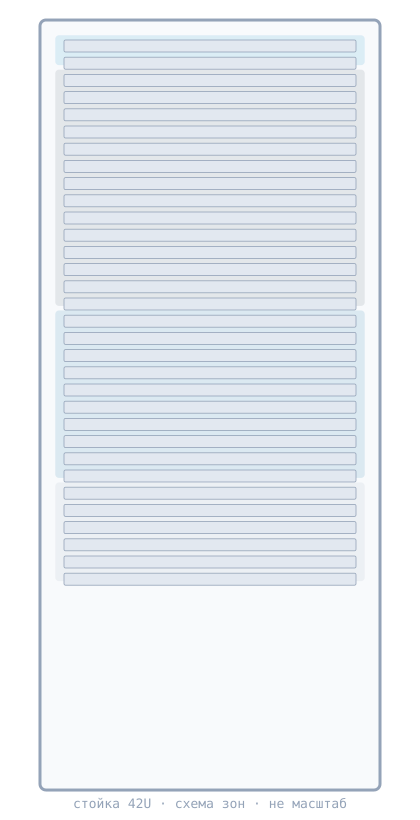

Условия работы с юридическими лицами
Поставляем серверное и сетевое оборудование системным интеграторам, операторам связи и ЦОД по всей России. С физическими лицами и розницей не работаем.
Под кого настроен контур
Проектные спецификации целиком или по дефицитным строкам
- Формат: расчёт по обезличенной спецификации (только партномера и количества, без имени вашего конечного заказчика).
- Подбор аналогов и допустимых состояний по каждой строке.
- Проверка требований ТЗ к допустимости оборудования — индивидуально, без обещаний включения в реестры.
- NDA — по согласованию сторон, как опция.
Стойко-ориентированные поставки и ЗИП для эксплуатации
- Серверы 1U/2U, All-Flash СХД, ToR-коммутаторы, оптика 25G/100G.
- Совместимый ЗИП: БП, NVMe, ECC RDIMM, трансиверы.
- «В наличии» — отгрузка после согласования; «Под заказ» — срок по запросу.
- Состояние и документы — по каждой строке КП.

Пять шагов от запроса до отгрузки
- 01Запрос КП или загрузка ТЗ
Партномера, требования по задаче, файлы спецификаций (XLS, PDF, DOC) или черновик спецификации с сайта.
- 02Проверка наличия и состояния
Что есть в наличии, что поставляется под заказ; состояние по каждой строке.
- 03Коммерческое предложение
Комплектация, состояние и индивидуальный срок поставки по каждой позиции.
- 04Договор и безналичная оплата
Договор поставки с юрлицом; режим налогообложения и комплект документов фиксируются в договоре.
- 05Отгрузка и доставка по РФ
Самовывоз по согласованию или транспортные компании по всей России.
Расшифровка состояний оборудования
| Состояние | Происхождение | Тестирование | Документы | Гарантия | Применимость: интеграторы и ЦОД |
|---|---|---|---|---|---|
| Новое | Заводская поставка, не было в эксплуатации | Заводской контроль; вскрытие только по согласованию | Документы поставки по каналу, УПД | Условия — в КП и договоре поставки | Новые инсталляции, проектные поставки под ТЗ |
| Factory Refurbished | Восстановлено производителем | Заводской цикл восстановления | Только при документальном подтверждении вендора | По документу вендора; условия — в договоре | Экономия бюджета при заводском цикле |
| Seller Refurbished | Восстановлено поставщиком | Диагностика, замена изношенных узлов, нагрузочный тест | Протокол тестирования поставщика | Гарантия продавца; гарантия производителя не обещается | Расширение парка, ЗИП, тестовые и вторичные площадки |
| Б/у | Бывшее в эксплуатации | Базовая проверка работоспособности | Описание состояния в КП | Гарантия производителя не обещается; условия — в договоре | Стенды, некритичные узлы, бюджетный ЗИП |
Состояние указывается по каждой строке КП. Градации соответствуют требованиям к описанию качества товара (ст. 469–477 ГК РФ). Для Seller Refurbished и Б/у гарантия производителя не обещается.
Работа с проектными ТЗ
Для системных интеграторов и корпоративных закупщиков работаем в формате: расчёт по обезличенной спецификации (только партномера и количества, без имени вашего конечного заказчика); NDA — опционально, по согласованию сторон. Требования ТЗ к допустимости поставки проверяем индивидуально: не обещаем включение в реестры (в том числе по ПП № 1875) для иностранного и б/у оборудования.
Налоги, документы и реквизиты
Работаем с НДС и закрывающими документами; реквизиты юридического лица — ниже. Отдельные регламенты ещё уточняются и помечены слотами.
Налоги и документы
- Работаем с НДС, УПД
- Цены на сайте — с НДС (22 %)
- Договор поставки, безналичный расчёт
Каналы поставки
- [ГТД по каналам поставки]
- [Нотификации ФСБ (iLO/iDRAC/iBMC/TPM, криптография сетевого оборудования)]
- [ТР ТС 004/020/037]
Гарантия и регламенты
- [Таблица гарантии продавца по 4 состояниям]
- [SLA ответа на КП (если будет утверждён)]
Юридическое лицо
- ООО «БИТ-ЛАБОРАТОРИЯ»
- ИНН 7713529569 · КПП 771301001
- ОГРН 1047796430230
- 127644, Москва, ул. Лобненская, д. 21, стр. 5
- Зарегистрирована в 2004 году
О компании
ООО «БИТ-ЛАБОРАТОРИЯ» — B2B-поставщик серверного, сетевого и инфраструктурного оборудования; зарегистрирована в 2004 году. Мультивендорный каталог нового, восстановленного и б/у оборудования, расчёт по спецификациям, поставки по всей России.
Контакты
- ГородМосква · поставки по всей РФ
- Адрес127644, Москва, ул. Лобненская, д. 21, стр. 5
- Телефон+7 (495) 000-00-00
- E-mailinfo@example.ru
- Режим работы[часы работы — слот заказчика]